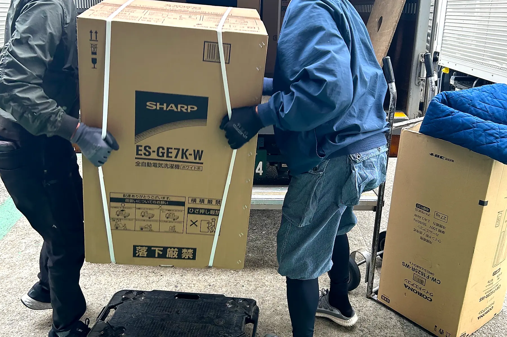
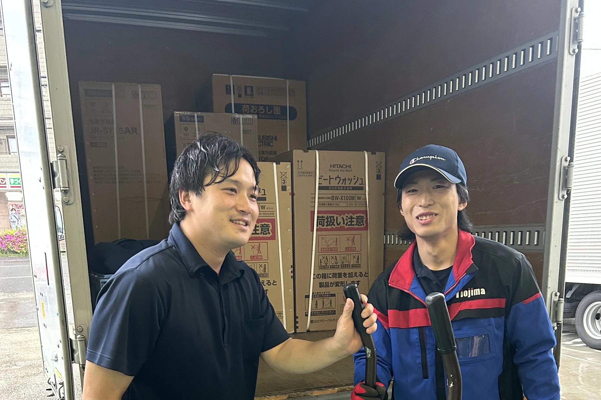
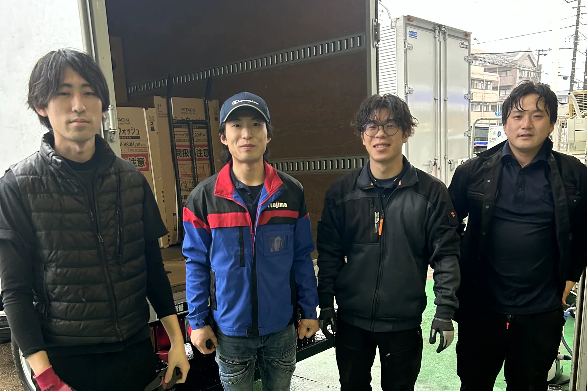

正社員
配送スタッフ
商品をお客様のご自宅へお届けし、設置まで行います。エアコン工事も、当社の指導で覚えていけます。2人1組で伺うので、未経験の方も先輩と一緒に。
SCENE 01助手席と、運転席。
現場へは、2人1組で。
エイト流通サービスの採用 ／ 家電配送・エアコン工事
最初の仕事は、先輩の隣に座ること。浦安本社と埼玉営業所から、東京・千葉・埼玉のご家庭へ家電を届けて、取り付けている、1986年創業の会社です。
01 ／ 仕事
家電量販店様からお預かりした冷蔵庫・洗濯機・テレビ・エアコンを、お客様のご自宅へ届けて、設置まで行います。現場はお客様のご自宅の中。運転する車は2tショートトラックです。
正社員
商品をお客様のご自宅へお届けし、設置まで行います。エアコン工事も、当社の指導で覚えていけます。2人1組で伺うので、未経験の方も先輩と一緒に。
ここからは正社員の1日の流れです。現場や担当業務によって、時間と順番は変わります。
その日のルートを確認して、2人1組でトラックに商品を積み込みます。
お客様のご自宅へ。冷蔵庫や洗濯機を運び入れて、設置まで行います。
移動の合間に休憩を取ります。
2件目、3件目へ。エアコン工事を覚えると、工事の現場にも入ります。
トラックを戻して報告したら、その日の仕事は終わりです。
02 ／ 仲間
配送の現場にも、工事の現場にも、2人1組で伺います。

朝から夕方まで、ずっと2人1組。写真は配送の合間のひとコマです。
03 ／ 給与
未経験で入って、正社員になって、上がっていけます。下の条件は、2026年9月に渡邉社長から直接確認したものです。
まずアルバイトの助手として入って、続けられそうなら正社員へ。運転はドライバーにお任せなので、助手席から始められます。実際に、アルバイトから入って7年目で月給46万円になった社員がいます。
04 ／ 道すじ
2人1組・当社での工事指導。仕事のしくみを、入社した一人の目線で並べました。

SCENE 01
最初は先輩の助手として現場へ。アルバイトの助手なら運転はドライバーにお任せです。荷物の持ち方も、お客様のお宅への上がり方も、隣で見て覚えます。

SCENE 02
車両は2tショートトラックです。
SCENE 03
エアコンの取付・取外し・入替。工事の指導は当社で行うので、未経験から習得できます。当社は登録電気工事業者（千葉県知事 第210082号）です。

SCENE 04
配送に加えて、エアコン工事も覚えていきます。指導は当社で行います。

SCENE 05
現場は2人1組。教わった人が、次の誰かの先輩になっていく仕事です。
05 ／ 本音
配送業務でマッチョになりたい方歓迎。
AI時代には必ず手に職が有利。
大丈夫です。2人1組で伺うので、最初は先輩と一緒に現場で覚えていきます。エアコン工事の指導も当社で行います。
冷蔵庫や洗濯機は、いつも2人がかりで運びます。体は仕事の中で慣れていきます。
アルバイトは日給11,980円（別途、交通費1,000円）。正社員は月給34万円〜。賞与は年3回（7月・12月・3月）です。在籍している社員では、入社4年目・5年目で月給40万円、入社7年目で月給46万円になっています。いずれも未経験で入った社員です。
もちろんです。「条件を聞きたいだけ」のご連絡も歓迎です。LINEからお気軽にどうぞ。
エアコン（AC）工事の指導は当社で行うので、未経験から工事の技術を習得できます。
浦安本社（千葉県浦安市富士見3-11-1 舞浜ガーデンヒルズ207号室）と埼玉営業所（埼玉県新座市野火止2-11-25）です。配送で伺う範囲は東京・千葉・埼玉です。
06 ／ 募集要項
| 給与 | 月給340,000円〜（未経験の方のスタートの額です） 賞与 年3回（7月・12月・3月）／20日締め・当月末払い 在籍している社員の実例：入社4年目・5年目で月給400,000円、入社7年目で月給460,000円（いずれも未経験入社） |
|---|---|
| 職種 | 配送スタッフ（家電の配送・設置・エアコン工事） |
| 仕事内容 | 家電量販店で購入された冷蔵庫・洗濯機・テレビ・エアコンを、お客様のご自宅へ搬入し、設置します。エアコンの取付工事も行います。 工事の指導は当社で行います。配送を続けながら、エアコン工事も覚えていけます。 |
| 対象 | 未経験の方も歓迎です 2人1組で伺うので、先輩と一緒に覚えていけます。 |
| 勤務地 | 浦安本社（千葉県浦安市富士見3-11-1 舞浜ガーデンヒルズ207号室） 埼玉営業所（埼玉県新座市野火止2-11-25） |
| 勤務時間 | 8:00〜17:00（休憩1時間）／残業なし |
| 休日 | 週休2日 |
| 昇給 | 昇給あり |
| 待遇 | 社会保険完備／生命保険／家族手当／交通費支給（規定内）／制服貸与／エアコン（AC）工事の指導あり |
| 給与 | 日給11,980円 別途、交通費1,000円を支給します 日給保障付き／日払いに対応しています（20日締め・当月末払いも選べます） |
|---|---|
| 職種 | 配送アシスタント（家電配送の助手） |
| 仕事内容 | ドライバーの助手です。運転はドライバーにお任せです。助手席に座って現場へ向かい、2人1組で作業します。 |
| 対象 | 未経験の方も歓迎です。運転はしないので、助手席から始められます。 |
| 送迎 | 最寄り駅まで送迎します |
| 勤務地 | 埼玉県新座市野火止2-11-25 |
| 勤務時間 | 8:30〜17:30 日給保障付きのため、早く終わっても日給は変わりません |
| シフト | 単発・短期も相談できます |
| 集合・解散 | 現地集合・現地解散も可能です |
※勤務時間・シフト・支払いの条件は、時期によって変わることがあります。
最終更新

「正社員の条件だけ聞きたい」「単発でアルバイトに入りたい」「エアコン工事って何をするの」――どれでも大丈夫です。応募するかどうかは、話を聞いてから決めてください。1日だけ現場を体験してから決めることもできます。
LINEで話を聞いてみるLINEはいつでも受け付けています。土日祝でもどうぞ。